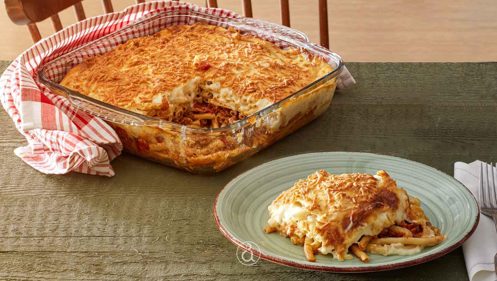

Pastitsio

Oh how the mouth waters!Imagin returning home and a huge plate pastitsio is cooling down on the table!
Contrary to popular belief, this tradional Greek marvel of a recipe is quite simple, and yet extremely rewarding.
Ingredients
- 12 oz uncooked penne pasta (4 cups)
- 2 tablespoons olive oil
- 1 lb extra-lean (at least 90%) ground beef
- 1 large onion, chopped
- 4 cloves garlic, finely chopped
- 1 1/2 teaspoons ground cinnamon
- 1 1/2 teaspoons salt
- 1/2 teaspoon pepper
- 1 jar (25.5 oz) Muir Glen™ organic tomato basil pasta sauce
- 1/2 cup grated Parmesan cheese
- 3 beaten eggs
- besamel
Steps
- Heat oven to 350°F. Cook and drain pasta as directed on package.
- Meanwhile, in 12-inch skillet, heat oil over medium-high heat. Add beef; cook 5 to 7 minutes, breaking up any lumps with back of wooden spoon. Add onion; cook and stir about 4 minutes or until softened. Add garlic, cinnamon, 1 1/2 teaspoons salt and the pepper; cook 1 minute. Stir in pasta sauce. Heat to simmering; reduce heat to low. Cook 5 minutes, stirring occasionally.
- Spray 13x9-inch (3-quart) baking dish with cooking spray. In large bowl, mix tomato sauce mixture, cooked pasta, 1/2 cup Parmesan cheese and 3 eggs. Spread in baking dish; spread top smooth.
- n 2-quart saucepan, melt butter over low heat. Stir in flour, 1 teaspoon salt and the nutmeg. Cook over medium heat, stirring constantly, until smooth and bubbly. Gradually beat in milk with whisk. Heat to boiling, stirring constantly; boil and stir 1 minute. Remove from heat; beat in 1/2 cup Parmesan cheese. In small bowl, beat 1/2 cup of the hot mixture into beaten egg. Return egg mixture to pan, beating constantly. Pour over top of pasta.
- Bake 30 to 35 minutes or until top is bubbly and lightly browned in spots. Let stand 15 minutes before serving.